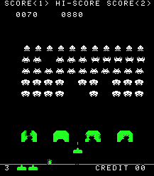

Results
Following results are for the static C++ library implementing the re-expression method, where the sources can be found at GitHub at https://github.com/arauhala/libreexp/ or downloaded from here. The software license is modified version of GPLv2.0 with an exception that commercial use is prohibited. Contact author via email address 'arau at iki dot fi' if different license terms are needed. Results can be reproduced by running the library's test suite.
Machine learning samples from StatLog (statlogbits test suite)
StatLog was the comprehensive evaluation of supervised learning from 90s, where 23 methods (including statistical methods, machine learners and neural networks) were evaluated with 29 cases of real world data. Four (4) StatLog data sets were used for testing and comparing re-expression technique against other algorithms:
| Data-set | Statlog Rank | Result | Statlog's Best |
| German credit data | 1. | .510 | .541 (Discrim) |
| Australian credit data | 1. | .128 | .131 (Cal5) |
| Heart disease | 1. | .344 | .374 (NaiveBay) |
| Shuttle control | 7. | 0.10% | 0.01% (NewId) |
First three of the data sets had mostly discrete input data, while fourth contained mainly numerical input. In the three data sets with mostly discrete input, the re-expression+naive Bayesian combo provided the best results. Re-expression technique improved naive Baysian results significantly in the discrete data-sets and dramatically for Shuttle Control by dropping error rate by 30x as visible in following graphs. In graphs smaller threshold means higher level of re-expression, while for entropy, cost and error smaller is better. In German credit, entropy wasn't the StatLog metric, but it's interesting as the best measure for the underlying probability estimate. Results are for both test and train data sets; where test is interesting data set and test/train split follows StatLog instructions.
 |
 |
 |
 |
The graphs here show how various metrics behave, when threshold parameter varies. On the right corner of graph there is typically the result for plain naive Bayes, while on the left side of graph there are results for naive Bayes working on heavily re-expressed data. While re-expression typically helps, too heavy re-expressing will raise granularity of the data too high and lead to undesirable overfitting thus harming the results. What is also visible in the diagrams is that while entropy of predicted variable (see german credit) reduces quite continuously, the cost and error rates may go quite dramatically up and down as re-expression proceeds. This contradicting looking situation is caused by the classification not minding redundancy as long positive and negative evidense is duplicated as many times. If re-expression eliminates duplication indicating A, then also duplication indicating B needs to be eliminated to bring algorithm back to balance.
Next graphs demonstrate the algorithm's speed:
 |
 |
Previous images show how the prediction times behave, when the system gets re-expressed. In german credit, australian credit and heart disease samples the prediction speed with re-expressed data stays in the magnitude of plain naive Bayesian predictor. If data is heavily re-expressed, prediction speed may take even twice the time, but per sample the speed remains around 10 microseconds, more or less. As shuttle control data gets re-expressed with much heavier hand, the performance impact is also much bigger, varying between 0.3 ms - 32 us depending of threshold. The learning of re-expression for optimal results took 17 ms for german credit, 92 ms for australian credit, 150ms for heart and 4 seconds for shuttle control. Transforming other data into formed expression is around 50-1000 times faster. Measurements, were done on a single processor of 1.3 Ghz Pentium M netbook.
Images and image classification (image, optdigits test suites)
So, re-expression technique does give major boost to naive Bayesian classifier in more traditional machine learning problems. But how does the algorithm work with different kind of data, like images. Here I'll present two problem settings, where first is about parsing an image into its graphical primitives.
In the first problem setting, we have a screenshot of the classic game 'Space Invaders', shown left. Here learning 108 expressions from the 54k pixels took 3.7 seconds. The expressions were sorted based on how many of them were found in the image and that how much information they carry and the picture on the right visualizes the top 15 expressions from that list. For each shown expression exists a bit vector showing the exact locations, where the monsters, ships or letters are present in the image. Because re-expressing is extremely fast once the new expression has been learned, the technique could be used out-of-box for parsing real-time stream of Space Invaders' pixels, or parsing the pixels out of similar old game classics.
|  |  |
The second problem setting combines pattern recognition in images with classic machine learning. The data set 'Optical Recognition of Handwritten Digits' is from UCI machine learning repository, where there are 32x32 bit images of hand written digits. The set is split into few sets, of which we use train set of 1934 images and validation set of 946 images. The image on left shows how classification accuracy behaves, when more expressions are added. It is worth noting that the algorithm doesn't utilize the location information for pixels. The naive version of classification therefore merely counts pixels and tries to deduce class by pixel count, which results meager 14% accuracy. Once expression count is raised to 80, the accuracy raises to 0.650, which isn't very impressive, but it shows that out-of-box re-expression mechanism does its job. Results would likely greatly improve, if location information was taken into account. Image on right visualizes how digits are parsed into primitive shapes that are then used to predict the digit based on statistics.
 |
 |
Generic tests for machine learning (vars test suite)
In vars test suite, there are separate tests for simplistic AND, OR and XOR relationships, but even further there are test cases, where input-to-input variable and input-to-output variable dependencies are each randomized based on configurable average dependencies. This rather generic test setting is useful for testing some core assumptions of the re-expression technique tat are 1) elimination of redundancy reduces bias thus improving naive Bayesian results and 2) re-expression+naive Bayesian combo provides valid probabilities that can be treated as probabilities. Even futher we would like to know, whether the estimated probabilities converge to the real probabilities given enought data.
Because we are trying to estimate accuracy of probabilties, we measure the results with a version Shannon's information entropy, which measures in how many bits the variable can be encoded on average using the estimated probabilities. As we know the system generating the information, we can calculate also 'ideal entropy' that is the best possible result (lower is better) and what we might call 'variable naive entropy', which is based on the variable states alone ignoring the input data. Difference between these values describe that how much information input variables contain of the predicted variable. In the test setting there was 64 input variables with varying average dependency and up to 4096 trained samples. The results are based on 200 predictions on 20 different randomly generated systems for each threshold and sample count combination.
 |
 |
 |
The tables and images demonstrate well the pathological behavior of the naive Bayesian inference, when input variables are dependent. Even with smallest measured redundancy (ldep=0.2) in input, the naive bayesian inferences performs worse (0.608) than the naive estimate (0.576) that simply ignores entire input. The fact that naive Bayesian inference provides garbage with even smaller redundancy explains why method is generally not used for estimating probabilities, but instead as a classifier. As input variables get more redundant, the naive Bayesian biases and probabilities become even wilder, while the behavior is completely different if data is re-expressed. If re-expression is applied, the probabilities are informative and even accurate. Even further the difference between estimate based and ideal entropy does not greatly depend of ldep indicating that the re-exression aided predicting works regardless of redundancy in input.
The results do give indication, that the probability estimates for re-expression supported predictor would converge towards the ideal, in the case of our test. While the testing does not progress far enought to really verify or falsify this claim, even if the results do consistently improve up to 4096 samples, the resuls make it obvious that with enought samples the provided probabilities are real probabilities and even pretty accurate probabilities and they can be treated as such. Of course, the amount of the required samples to reach this desirable condition varies depending of variable count, redundancy in the system and the threshold.
Language learning and world learning (text, rooms test suites)
There are several other test cases in the re-expression library's test suite, which may not be super-impressive, but which are interesting anyway. One reason, why all tests are not very impressive has been simply the lack of time in creating more challenging and complete test cases. Another reason as in case of 'rooms' is the inherent complexity in the data. Few test cases in 'text' test suite is around learning grammar for very simplistic pieces of text and finding correct classification (bear or pirate). Another test case has generated text and the problem is detecting the class of the text generator. Still, the test cases are somewhat unimpressive as they are very simplistic and even trivia.
There is also another complete different kind of test called 'rooms', which deals with playing histories of very a simplistic game, where the player needs to escape from dungeon with one to two room and with 5x5 view of the surrounding map tiles. In a way, the problem is the problem of modeling 1) the entire game world 2) decisions 3) heuristics (goals and how to achieve them) and 4) relationships between these things. In this way, the rooms problem is the McCarthy's epistomological (world modeling) problem in miniature form. The data is organized into 4 dimension space (game, turn, x, y) and it contains information around tiles (is wall, light, stair), decisions and heuristics (game won). The relationships between variables make it possible to detect shapes that are 3 dimensional and between various variables. In principle, patterns of isWall(g, t, x, y) AND moveLeft(g, t) AND isWall(g, t+1, x+1, y) can be detected throught relationships and these patterns would function to detect 1) how the world works 2) what leads to victory and 3) behavioral routines in general and in certain conditions. At some level the intended kind of learning does occur, but the results are mixed and not very impressive. The most impressive part is merely that the language of variables, context vector and relationships is pretty powerful in describing 'nethack' kind of worlds, the engine is able to consume the 200 games with 20 turns, 25 pixels and tens of variables and learn some patterns in few ten seconds. Still, while the techniques and test cases can be - with no doubt - improved: right now the test setting does not provide useful results.